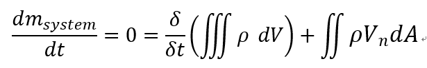
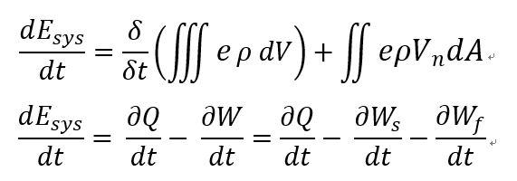
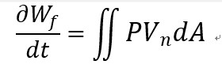
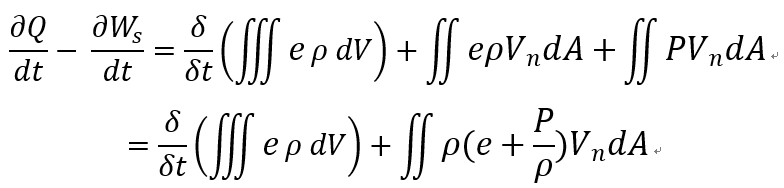
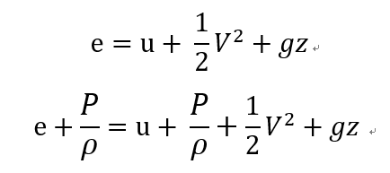
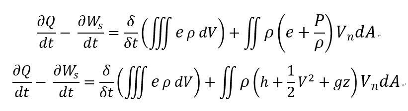

결국 최종목표는 유체의
1. 질량보존
2. f = ma
3. E 보존
방정식을 세우는 것이다.
이전 포스터에서 유도한 Reynolds transport theoerm을 활용하여 위 목표를 달성해보자.
Reynold's transport theorem 을 이용하여 B가 mass, linear momentum, Energy 인 경우로 나누어 해석해보자
![[Gas dynamics] Ch 2 - Control volume analysis - Application of Reynolds Transport Theorem](./images/img-001.png)
1. B = m(mass), β=dB/dm = 1
System의 mass는 시간이 흘러도 일정하므로 (dm/dt) system = 0 이다.
따라서,

여기서부터는 이제 Assumption 들에 따라서 식이 변형 된다.
1. steady state 인 경우,
2. 1-Dimensional Anaylsis경우
(V가 면적과 perpendicular 인경우 Vn = V)
![[Gas dynamics] Ch 2 - Control volume analysis - Application of Reynolds Transport Theorem](./images/img-003.png)
2. B = L(Linear momentum), β=dL/dm = v
Reynolds transport theorem 에 대입해주면 다음과 같은 식이 도출된다.
![[Gas dynamics] Ch 2 - Control volume analysis - Application of Reynolds Transport Theorem](./images/img-004.png)
결국 system에 작용하는 힘(알짜힘) 과 integral form 의 관계식이 나오게 된다.
![[Gas dynamics] Ch 2 - Control volume analysis - Application of Reynolds Transport Theorem](./images/img-005.png)
마찬가지로 Assumption 들에 따라서 식이 변형되는데 제일 자주 등장하는 Assumption:
1. Steady state process
2. 1-Dimensional analysis
인경우
![[Gas dynamics] Ch 2 - Control volume analysis - Application of Reynolds Transport Theorem](./images/img-006.png)
![[Gas dynamics] Ch 2 - Control volume analysis - Application of Reynolds Transport Theorem](./images/img-007.png)
최종식이 도출된다.
3. B = E(Energy), β=dE/dm = e(energy per unit mass)
System의 에너지 변화량은 열역학 제 1법칙을 통해서 열과 일의 변화량으로 표현 할 수 있다

핵심은 일의 종류를 두가지로 나눌 수 있다는 것이다.
1. Shaft work
외부 machine에 일을 한경우,
ex) system 내부에 들어있는 터빈을 돌리는 경우), Ws
2. Flow work
부피변화에 따른 외부로 가한 일(유동일), Wf
여기서,
유동일은 다음과 같이 면적분의 형태로 나타낼 수 있다.

위식을 기존 식에 대입해주고 flow work term 을 우항으로 옮겨주면

다음과 같은 식이 정리된다.
여기서 e term을 변형시켜보자
다시 e의 정의를 보면 System total energy per unit mass이다.
e는 Internal energy , Kinetic energy, potential energy term으로 다음과 같이 분해할 수 있고 각 항에 Pv 를 더해주자

여기서 우리는 익숙한 식을 알 수 있다.
익숙하지 않더라도 앞으로 너무 많이 보이는 식이기때문에 강제로 익숙해 진다.
![[Gas dynamics] Ch 2 - Control volume analysis - Application of Reynolds Transport Theorem](./images/img-012.png)
바로 Enthalpy이다.
![[Gas dynamics] Ch 2 - Control volume analysis - Application of Reynolds Transport Theorem](./images/img-013.png)
이제 위식을 Reynolds Transport Theorem 식에 대입해주면

최종 Reynolds transport theorem 에너지 Equation이 도출 되게 된다.
이제 여기서부터 다시 Assumption 들에 따라서 식이 변형된다.
똑같은 assumption
1. Steady state
2. 1-Dimensional process
를 적용해주면
![[Gas dynamics] Ch 2 - Control volume analysis - Application of Reynolds Transport Theorem](./images/img-015.png)
여기서 heat and work change per unit mass 를 q, ws로 다음과 같이 정의해주면
![[Gas dynamics] Ch 2 - Control volume analysis - Application of Reynolds Transport Theorem](./images/img-016.png)
다음과 같은 최종 Reynolds transport Theorem Energy equation 이 도출 된다.
(정말정말정말 중요한 Equation)
![[Gas dynamics] Ch 2 - Control volume analysis - Application of Reynolds Transport Theorem](./images/img-017.png)
위에서 구한 식은, Control volume에
들어오고 나가는 열,일과 엔탈피 운동에너지 위치에너지의 관계식이다.
이제,
밑 그림과 같이
아주아주 작은 Control volume
인 경우를 생각해보면
![[Gas dynamics] Ch 2 - Control volume analysis - Application of Reynolds Transport Theorem](./images/img-018.jpg)
Steady state, 1-D Assumption을 적용한 Reynolds transport Theorem Energy equation을 적용해보면
![[Gas dynamics] Ch 2 - Control volume analysis - Application of Reynolds Transport Theorem](./images/img-019.png)
이제 좌항들을 소거해보자 + High order differential term 도 소거하자
![[Gas dynamics] Ch 2 - Control volume analysis - Application of Reynolds Transport Theorem](./images/img-020.png)
이제 다시 Enthalpy (dh = du +d(pv) = du + pdv+vdp) 를 대입해주면
![[Gas dynamics] Ch 2 - Control volume analysis - Application of Reynolds Transport Theorem](./images/img-021.png)
최종 Equation이 의미하는 것은
Steady state, 1-D, Differential form of Energy equation 이다.
앞으로 계속해서 나오는 식!